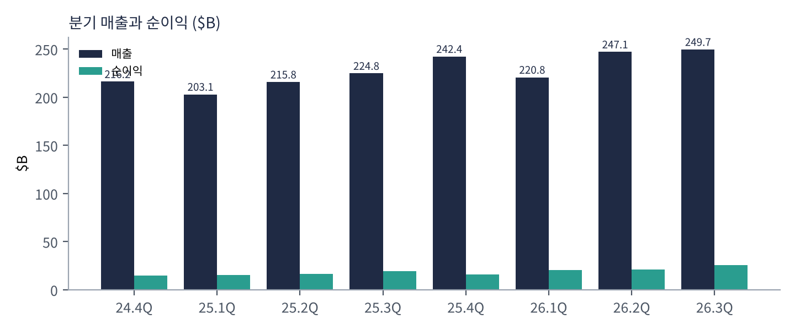
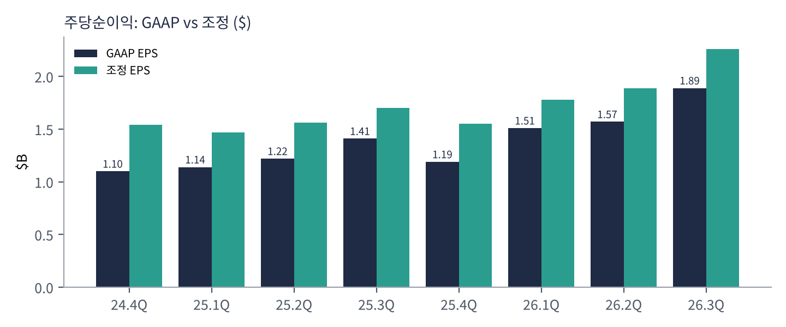
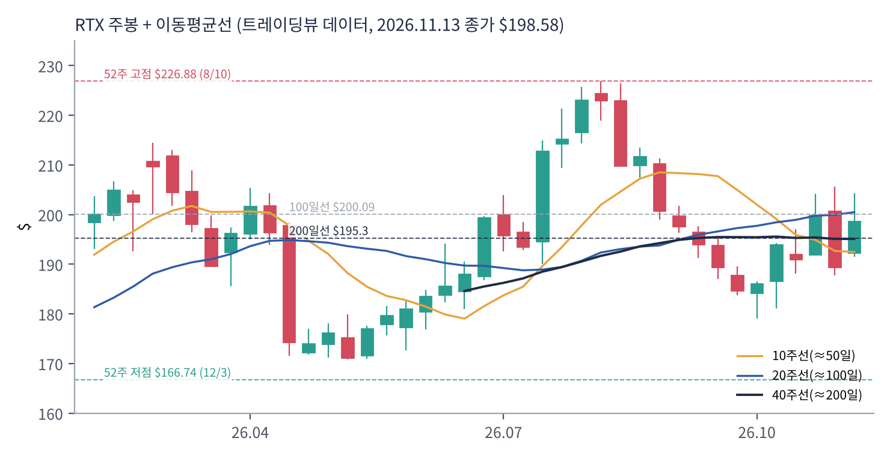
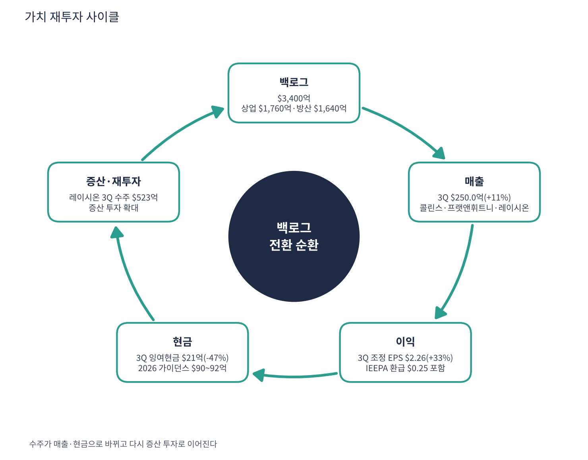

RTX는 항공기 엔진(프랫앤휘트니), 항공 시스템(콜린스 에어로스페이스), 미사일·방공(레이시온)을 만드는 미국 방산·항공 기업이다. 이 보고서 시점의 매출은 연 $960억 수준(TTM)이다. 백로그가 $3,400억(상업 $1,760억·방산 $1,640억)이고 가이던스를 올렸지만, 3Q 조정 EPS에 일회성 환급($0.25)이 들어갔고 잉여현금은 47% 줄었다.
| 항목 | 내용 |
|---|---|
| 종목 | RTX Corporation (RTX) · NYSE · 항공우주·방산 · 본사 미국 버지니아주 알링턴 |
| 시가총액 | 약 $2,680억 · PER 32.3배(GAAP TTM), 조정 기준 약 26.5배 · P/S 2.83배 (11/13 종가 $198.58) |
| 최근 분기(3Q26) | 매출 $250.0억(+11%), 순이익 $25.8억, GAAP EPS $1.89, 조정 EPS $2.26(+33%) |
| 부문(3Q 매출) | 콜린스 $84억, 프랫앤휘트니 $92억, 레이시온 $80억 |
| 현금·부채 | 현금 약 $92억, 총차입금 약 $389억, TTM 잉여현금 약 $95억, TTM EBITDA 약 $151억(스캐너) |
| 가이던스(2026) | 조정 매출 $970~975억, 조정 EPS $7.65~7.75, 잉여현금 $90~92억 — 상향 |
| 다음 일정 | 4Q26 실적 2027.1.26 예정(트레이딩뷰). 2027 가이던스는 1월 실적 발표에서 공개 |
| 직책 | 인물 | 역할·특징 |
|---|---|---|
| 회장·CEO | 크리스 칼리오 | 콜린스·프랫·레이시온을 묶은 사업 구조를 이끈다 |
| CFO | 닐 미칠 | 가이던스와 현금 흐름을 설명 |
경영 스타일: '백로그를 매출로 바꾸는 실행'. 3Q 조정 EPS가 33% 늘고 가이던스를 올렸다. 다만 조정 EPS에는 IEEPA 관세 비용 회수 $0.25가 들어 있어, 이를 빼면 약 $2.01(+18%, 내 계산)이다.
프랫앤휘트니 엔진과 콜린스 항공 시스템이 상업 항공 서비스 매출을 만들고, 레이시온이 미사일·방공 증산을 맡는다. 레이시온의 3Q 수주는 $523억이다.
백로그 $3,400억 중 상업 $1,760억, 방산 $1,640억으로 두 축이 비슷하다. 2027 가이던스가 첫 확인 지점이다.
| 분기 | 매출 | 순이익 | EPS | 조정 EPS | 특이 사항 |
|---|---|---|---|---|---|
| 2024.4Q | $216.2억 | $14.8억 | 1.10 | 1.54 | |
| 2025.1Q | $203.1억 | $15.3억 | 1.14 | 1.47 | |
| 2025.2Q | $215.8억 | $16.6억 | 1.22 | 1.56 | |
| 2025.3Q | $224.8억 | $19.2억 | 1.41 | 1.70 | |
| 2025.4Q | $242.4억 | $16.2억 | 1.19 | 1.55 | |
| 2026.1Q | $220.8억 | $20.6억 | 1.51 | 1.78 | |
| 2026.2Q | $247.1억 | $21.4억 | 1.57 | 1.89 | |
| 2026.3Q | $249.7억 | $25.8억 | 1.89 | 2.26 | IEEPA 비용 회수 $0.25 포함 |


흐름 요약: 분기 매출은 $203~250억으로 늘어 3Q26이 최대다. 조정 EPS는 $1.47~2.26이고 3Q26이 최고다. GAAP EPS는 $1.10~1.89로 조정보다 일관되게 낮다(무형자산 상각 등으로 추정되나 이 자료에서는 확인하지 못함). 영업이익과 분기 설비투자는 이 자료에서 구하지 못해 표에서 뺐다.
| 부문 | 3Q26 매출 | 비고 |
|---|---|---|
| 프랫앤휘트니 | $92억 | 엔진 신규·서비스 |
| 콜린스 에어로스페이스 | $84억 | 항공 시스템 |
| 레이시온 | $80억 | 3Q 수주 $523억 |
상업·방산이 비슷한 규모로 성장한다. 합계 매출은 $250.0억(+11%, 자체 성장 +12%)이다. 부문별 증감률은 이 자료에서 구하지 못해 뺐다. 백로그는 $3,400억(상업 $1,760억·방산 $1,640억)이다.
RTX는 '백로그를 매출로 바꾸는 증산'을 방향으로 잡았다.
| 축 | 최근 움직임 |
|---|---|
| 엔진 | 프랫앤휘트니 신규·서비스 매출 |
| 방산 | 레이시온 3Q 수주 $523억 |
| 가이던스 | 2026 조정 EPS $7.65~7.75로 상향 |
| 2027 | 가이던스는 1월 실적에서 공개 |

| 이동평균 | 값 | 종가 대비 | 해석 |
|---|---|---|---|
| 5일선 | $198.96 | -0.2% | 현재가 근접 |
| 20일선 | $196.56 | +1.0% | 현재가가 위 |
| 50일선 | $192.80 | +3.0% | 현재가가 위 |
| 100일선 | $200.09 | -0.8% | 현재가가 아래 |
| 200일선 | $195.30 | +1.7% | 현재가가 약 2% 위 |
주봉 흐름: 2025년 12월 저점 $167 → 2026년 3월 $210 → 4~6월 $171~190 → 8월 고점 $227 → 10월 $179~205 → 11/13 주 $198.6. 50일선($192.8)이 200일선($195.3) 바로 아래라 골든크로스 직전이다.
| 규칙 | 기준 | 현재 값 | 신호 |
|---|---|---|---|
| 장기 추세 필터 | 종가 vs 200일선 | $198.58 > $195.30 | 매수 |
| 중장기 교차 | 50일선 vs 200일선 | $192.80 < $195.30 | 매도 |
| 단기 교차 | 20일선 vs 50일선 | $196.56 > $192.80 | 매수 |
| 돈키언 채널 | 55일 고가 $213.50 / 저가 $179.02 | 중간값 $196.26 위 | 매수 |
| 1개월 모멘텀 | 21거래일 수익률 | +6.2% (기준 $186.95) | 매수 |
| 3개월 모멘텀 | 63거래일 수익률 | -10.4% (기준 $221.64) | 매도 |
| 6개월 모멘텀 | 126거래일 수익률 | +16.0% (기준 $171.18) | 매수 |
| 12개월 모멘텀 | 252거래일 수익률 | +11.8% (기준 $177.69) | 매수 |
| 종합 (8개 평균) | +0.50 | 매수 우위 |
해석: 8개 신호 중 6개 매수, 2개 매도(50/200, 3개월 모멘텀)로 점수 +0.50다. 50일선이 200일선을 넘으면 점수가 올라간다. 14일 ATR $5.57 (2.8%).
| 가격 | 무엇이 바뀌나 | 의미 |
|---|---|---|
| $196.3 이탈 | 돈키언 중간값 | 55일 채널 매수 → 매도 |
| $195.3 이탈 | 200일선 | 장기 추세 필터 매수 → 매도 |
| $221.6 돌파 | 3개월 기준가 | 3개월 모멘텀 매도 → 매수 |
| 구분 | 가격대 | 근거 |
|---|---|---|
| 저항 2 | $226.9 | 52주 고점(8/10) |
| 저항 1 | $213.5 | 55일 고점 |
| 지지 1 | $193 ~ 196 | 50일선 $192.8, 200일선 $195.3, 20일선 $196.6 |
| 지지 2 | $179 | 55일 저점 |
신호 점수는 중립 이상이다. $190~197 구간에서 계획 비중의 30%만 진입하고 1개월 기준가 아래 $186 종가 이탈 시 손절한다. 1차 목표 $213.5는 55일 고점, 2차 $221.6은 3개월 기준가(+12%)다. 조건은 1/26 실적에서 현금 전환 회복 확인이다.
| 악재 요인 | 내용 | 강도 |
|---|---|---|
| 현금 전환 둔화 | 3Q 잉여현금 -47%, 영업현금 -38% | 높음 |
| 일회성 환급 의존 | 조정 EPS $0.25가 IEEPA 비용 회수 | 중간 |
| 차입금 | 순부채 약 $297억, 순부채/EBITDA 약 2.0배 | 중간 |
| 밸류에이션 | 조정 PEG 1.37 | 중간 |
| 티커 | 회사 | 시가총액 | PER(TTM) | PEG | P/S | EPS 성장(YoY) |
|---|---|---|---|---|---|---|
| RTX | RTX | $268B | 26.5배 | 1.37 | 2.83배 | +19% |
| LMT | 록히드마틴 | $138B | 21.2배 | – | 1.77배 | +57% |
| GE | GE 에어로스페이스 | $343B | 43.1배 | 1.68 | 6.55배 | +26% |
| TDG | 트랜스다임 | $66B | 34.2배 | – | 6.46배 | +11% |
| AXON | 액슨 | $26B | 42.9배 | 5.00 | 7.52배 | +9% |
RTX·GE·AXON은 조정 EPS 기준(내 계산), LMT·TDG는 트레이딩뷰 GAAP TTM이다. LMT의 +57.1%는 기저 효과로 부풀어 PEG를 쓰지 않았다.
비교 결론: RTX는 GE보다 PER·PEG가 낮고 LMT보다 높다. 상업·방산 균형이 장점이지만 현금 전환이 약하다.
RTX는 현금 대비 차입금이 큰 편이다. 현금 약 $92억, 총차입금 약 $389억이다.
| 지표 | 값 | 계산·출처 | 해석 |
|---|---|---|---|
| 현금 등 | 약 $92억 | 스캐너 | |
| 총차입금 | 약 $389억 | 스캐너 | 순부채 약 $297억 |
| TTM 잉여현금흐름 | 약 $95억 | 스캐너 | 시총 대비 3.5% |
| TTM EBITDA | 약 $151억 | 스캐너 | 순부채/EBITDA 약 2.0배 |
| 기준 | 값 | 비고 |
|---|---|---|
| P/S (TTM) | 2.83배 | 시총 $2,680억 ÷ TTM 매출 약 $960억(내 계산) |
| P/FCF | 약 28배 | 시총 ÷ 잉여현금 $95억(내 계산). 가이던스 중간 $91억 기준 약 29배 |
| 동종 | 록히드마틴 1.8, GE 6.6, 트랜스다임 6.5 | 11/13 스캐너 |
해석: 3Q 영업현금은 $29억(-38%), 잉여현금은 $21억(-47%)으로 줄었다. 스트레스 가정: P/FCF 22배면 시총 $2,002억(약 $148, -25%), 28배면 $2,548억(약 $189, -5%), 33배면 $3,003억(약 $223, +12%)이다(내 가정, 가이던스 중간 $91억 기준).
| 지표 | 값 | 판정 |
|---|---|---|
| PER (GAAP TTM) | 32.3배 | 트레이딩뷰 |
| PER (조정 TTM) | 26.5배 | 최근 4분기 조정 EPS 합 $7.48(내 계산) |
| EV / EBITDA | 약 19.7배 | EV ≈ 시총 $2,680억 + 차입금 $389억 − 현금 $92억 = $2,977억, ÷ $151억 |
| 방식 | PER | EPS 성장률 | PEG | 판정 |
|---|---|---|---|---|
| 트레이딩뷰 (GAAP TTM) | 32.3배 | +26.4% | 약 1.22 | 트레이딩뷰는 PEG를 주지 않음. 내 계산 |
| 조정 EPS 기준 | 26.5배 | +19.3% | 약 1.37 | 기준 초과 |
| 조정 TTM $7.48 ÷ 직전 TTM $6.27 | – | – | – | 직전: 4Q24 1.54 + 1Q25 1.47 + 2Q25 1.56 + 3Q25 1.70 |
| 3Q 조정 EPS에서 IEEPA $0.25 제외 | 27.2배 | +17.2% | 약 1.58 | TTM $7.23 ÷ 직전 $6.27(내 계산) |
판정: 조정 PEG 약 1.37로 기준(1.0)을 넘음. 일회성 환급을 빼면 약 1.58까지 높아진다. 성장은 두 자릿수지만 가격이 이를 앞서 반영했다.

RTX의 사이클은 백로그 → 매출 → 이익 → 현금 → 재투자다. 약한 고리는 3Q 현금 전환이다.
| 고리 | 현재 숫자 | 고리 강도 | 약해지는 신호 |
|---|---|---|---|
| ① 백로그 | $3,400억 | 강함 | 수주 취소 |
| ② 매출 | $250.0억(+11%) | 강함 | 공급망 지연 |
| ③ 이익 | 조정 EPS +33% | 환급 포함 | 일회성 제거 시 +18% |
| ④ 현금 | 3Q 잉여현금 -47% | 약함 | 현금 전환 둔화 |
| ⑤ 재투자 | 레이시온 수주 $523억 | 강함 | 증산 투자 증가 |
구조: 강한 고리는 ①②⑤이고 ④가 약하다. 이익 증가율이 현금으로 이어지는지 다음 분기에 봐야 한다.